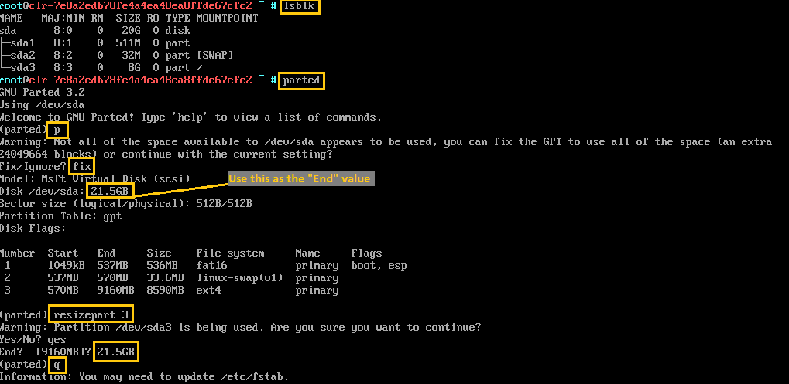
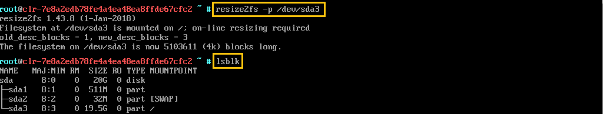

Increase virtual disk size of an image
This guide describes how to increase the disk size of your prebuilt Clear Linux* OS image if you need more capacity.
Determine the partition order and sizes of the prebuilt image
Clear Linux OS prebuilt images come in different sizes, ranging from 300 MB to 20 GB.
There are two methods to find the order and sizes of partitions virtual disk of your prebuilt Clear Linux OS image.
In both examples, the prebuilt Hyper-V image has a disk size of 8.5 GB with
/dev/sda3 being the partition for the root filesystem (/)
Checking lsblk on the VM
The first method is to boot up your VM and execute the lsblk command as shown below:
sudo lsblk
An example output of the lsblk command:
NAME MAJ:MIN RM SIZE RO TYPE MOUNTPOINT
sda 8:0 0 8.5G 0 disk
├─sda1 8:1 0 512M 0 part
├─sda2 8:2 0 32M 0 part [SWAP]
└─sda3 8:3 0 8G 0 part /
An example of this can also be seen in Figure 1.
Checking config.json used to build the image
The second method to determine partition to check the config.json
file used to create prebuilt image, located in the releases repository.
For example, to find the size of the Hyper-V* image version number 20450,
follow these steps:
Go to the releases repository.
Drill down into the 20450 > clear > config > image directory.
Open the
hyperv-config.jsonfile.Locate the PartitionLayout key.
The example shows 512 MB for the EFI partition, 32 MB for the swap partition, and 8 GB for the root partition.
"PartitionLayout" : [ { "disk" : "hyperv.img", "partition" : 1, "size" : "512M", "type" : "EFI" }, { "disk" : "hyperv.img", "partition" : 2, "size" : "32M", "type" : "swap" }, { "disk" : "hyperv.img", "partition" : 3, "size" : "8G", "type" : "linux" } ],
Increase virtual disk size
Once you have determined the disk and partition to be increased, you are ready to perform the actual increase of the disk, partition, and filesystem.
Power off VM and increase virtual disk size
To increase the virtual disk size for a prebuilt image, perform the steps below:
- Shut down your VM if it is running.
- Use the process defined by your hypervisor or cloud provider to increase the virtual disk size of your Clear Linux OS VM.
- Power up the VM.
Resize the partition of the virtual disk
Log in to an account with root privileges.
Open a terminal emulator.
Add the storage-utils bundle to install the parted and resize2fs tools.
sudo swupd bundle-add storage-utils
Launch the parted tool.
sudo parted
In the parted tool, perform these steps:
Press p to print the partitions table.
If the warning message below is displayed, enter Fix.
Warning: Not all of the space available to :file:`/dev/sda` appears to be used, you can fix the GPT to use all of the space (an extra ... blocks) or continue with the current setting? Fix/Ignore?
Enter resizepart [partition number] where [partition number] is the partition number of the partition to modify.
Enter yes when prompted.
Enter the new End size.
注解
If you want a partition to take up the remaining disk space, then enter the total size of the disk. When you print the partitions table with the p command, the total disk size is shown after the Disk label.
An example of this can be seen in Figure 1.
Enter q to exit parted when you are finished resizing the image.
Figure 1 depicts the described steps to resize the partition of the virtual disk from 8.5GB to 20GB.
Figure 1: Increase root partition size.
{kind=link}
Resize the filesystem
Enter sudo resize2fs -p /dev/[modified partition name] where [modified partition name] is the partition that was changed in the parted tool.
Run the df -h to verify that the filesystem size has increased.
Figure 2 depicts the described steps to resize the partition of the virtual disk from 8.5GB to 20GB.
Figure 2: Increase root filesystem size after partition has been expanded.
{kind=link}
Congratulations! You have resized the disk, partition, and filesystem. At this point, the increase in disk capacity is usable.